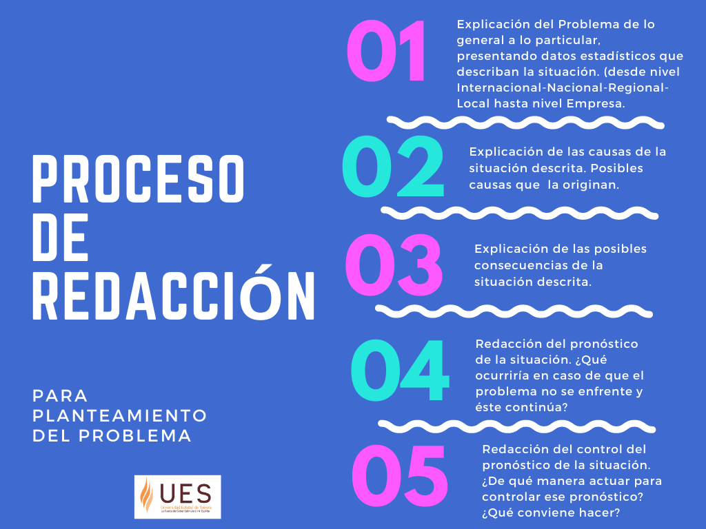

El Planteamiento del Problema es la justificación científica del motivo de la investigación. Se aclara el problema y se describe el porqué de la investigación para resolverlo.
- Consiste en afinar y estructurar formalmente la situación objeto de estudio, ubicándolo en un contexto que permita comprender su origen -
Por lo que, enunciar un problema requiere reunir los hechos alrededor de un problema, en este sentido, ambientar todas las características, el individuo o grupo a los que afecta el problema, contexto, narrar los antecedentes de la situación de estudio, así como mostrar hechos, relaciones y explicaciones que sean importantes.
Para determinar la importancia y su relación de los hechos que causan el problema, debemos verificar aspectos, proponer explicaciones para conocer la causa de la dificultad y determinar su importancia en el problema:
¿Quiénes son los actores que puedo examinar? ¿Qué subselementos componen el objeto que quiero investigar? ¿Desde cuándo se produce ese fenómeno que quiero estudiar? ¿Cuál es su futuro? ¿Cómo se relacionan los subelementos y los actores que constituyen el tema? ¿Por qué se producen estas relaciones? ¿Qué objetivos o fines que persiguen el individuo o grupo?
.
Un problema claramente definido y bien entendido es crucial para encontrar e implementar soluciones efectivas. De ahí que es recomendable seguir el siguiente proceso para la redacción del Planteamiento del Problema.

.
Ejemplo de redacción del planteamiento del problema: paso a paso (MiAsesordeTesis,2019).
“Rotación del personal y productividad de la empresa Colchones Dreams S.A.C. Lima, período enero – diciembre 2018”
PASO 1: Explicar el problema desde lo macro a lo micro.
¿Qué se sabe del problema? ¿El problema se limita a un cierto período de tiempo o área geográfica?
En 2016, la tasa de rotación voluntaria global a nivel mundial fue de 9.6%; para Europa fue del 7,1% (Gutmann, 2016). Esta misma tasa de rotación laboral en el Perú supera el 18%, frente al promedio de América Latina, que está entre 5 y 10% (Rabitsch, 2014). Este alto índice es para preocuparse, porque de acuerdo con las mejores prácticas los niveles, en términos generales, deberían estar alrededor del 5,7%.
En el caso del Perú, las razones de este alto índice de rotación de personal son: al alto despegue de la economía peruana y el que las personas ya no desean para mucho tiempo en una misma empresa, y, además, a que los sueldos en el mercado laboral se encuentran atrasados desde hace mucho tiempo y ante el surgimiento de una mejor oferta salarial no dudan en aceptar (Infocapitalhumano, 2014).
PASO 2 y 3: Explicar las causas y las consecuencias del problema.
¿Dónde y cuándo surge el problema? ¿A quién afecta el problema? ¿Tiene consecuencias directas o indirectas para la sociedad?
De acuerdo a Chiavenato (2010), la rotación del personal es una variable dependiente de los fenómenos internos y/o externos. Como fenómenos externos pueden citarse la situación de oferta y demanda de recursos humanos, la situación económica, las oportunidades de empleo, etc. Entre los fenómenos internos pueden mencionarse la política salarial y de beneficios sociales de la organización, el tipo de supervisión, etc.
Un alto índice en la rotación de personal en las empresas trae las siguientes consecuencias: una mala imagen a la sociedad, dificultad por parte del personal al integrarse y trabajar en equipo, baja productividad, brindar productos o servicios de mala calidad, una carencia en la identificación con la empresa y falta de compromiso hacia el logro de objetivos organizacionales (Millán, 2006).
Colchones DREAM S.A.C. es una empresa familiar establecida en Lima el año 2001, dedicada a la fabricación y comercialización de colchones. Si bien no se tienen datos antiguos, la tasa de rotación del personal ha pasado de 7% a 15% desde el año 2016 a al año 2017, y se observan una serie de consecuencias tales como el desánimo del personal, gran demora en las entregas de los pedidos, deficiente calidad de atención al cliente, quejas de los clientes, etc.
PASO 4: Redactar el pronóstico de la situación.
¿Qué sucederá si el problema no se resuelve? ¿Quién sentirá las consecuencias?
De seguir con esta tendencia en la tasa de rotación, el clima organizacional se afectará significativamente los niveles de productividad en la empresa serán más bajos, reduciendo así los niveles de competitividad, lo cual afectará significativamente los resultados financieros de la empresa.
Se cree que existe relación entre la rotación de personal y la productividad de la empresa Colchones Dream S.A.C. Además, se cree que los altos índices de rotación del talento humano afectan negativamente a los niveles de productividad de la empresa. Es por esto que el problema consiste en que no se ha determinado la existencia de una relación inversa entre la rotación de personal y la productividad.
PASO 5: Formular el control del pronóstico.
Las serias consecuencias de la alta rotación del personal hacen necesario determinar la existencia de relación con la productividad, y de existir tal relación, la empresa pueda desarrollar estrategias y acciones para reducirla. De esta manera será posible llevar a la empresa los beneficios de una rotación controlada, mejorar la productividad y la competitividad de la empresa.
REFERENCIA
MiAsesordeTesis(2019). Cómo redactar el planteamiento del problema paso a paso. https://miasesordetesis.com/como-redactar-el-planteamiento-del-problema-paso-a-paso/